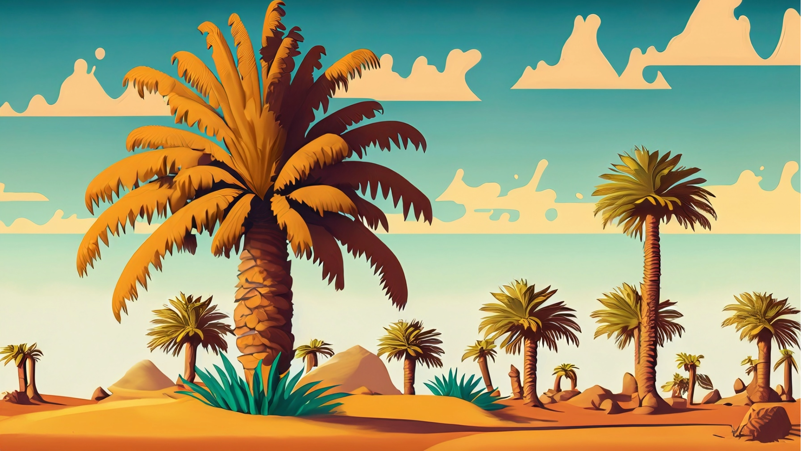
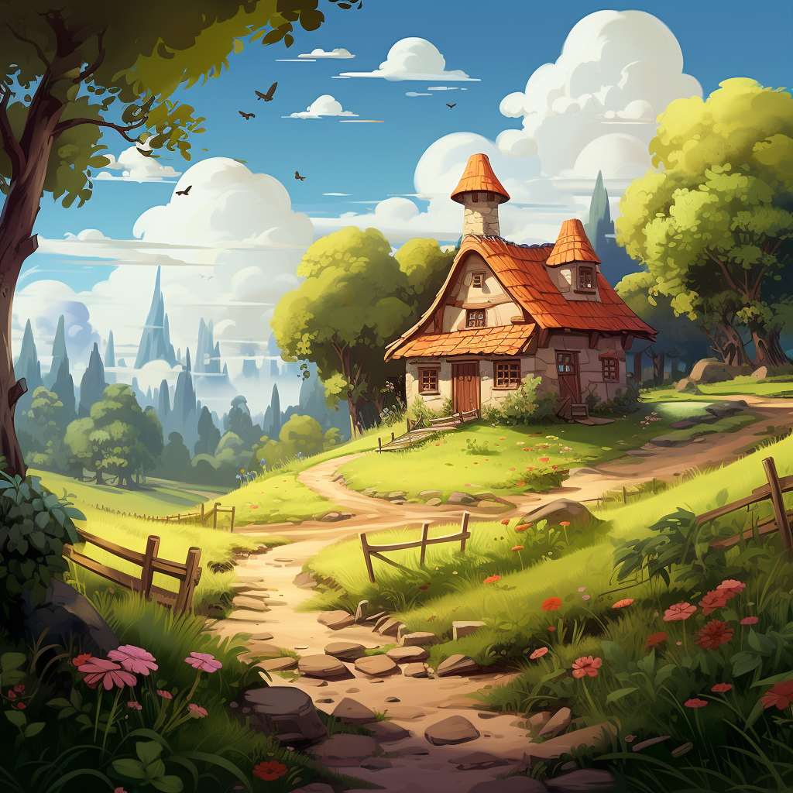

Il était une fois, dans une petite ville chaleureuse, deux frères et sœurs nommés Sara et Adam. Ils étaient super excités parce que c'étaient enfin les vacances d'été et qu'ils allaient les passer chez leurs grands-parents en Tunisie.
Dès leur arrivée, leur grand-père, Baba Ahmed, les a accueillis avec un grand sourire. C'était un vieil homme sage qui aimait raconter des histoires et enseigner de nouvelles choses à ses petits-enfants.


Le lendemain matin, Baba Ahmed emmena Sara et Adam dans une aventure spéciale dans un vaste champ rempli de grands palmiers. Sara et Adam n’avaient jamais vu de palmiers de près auparavant et ils ont été émerveillés par leur hauteur et leur beauté.
Baba Ahmed a expliqué que ces arbres étaient des palmiers dattiers et qu'ils allaient tout apprendre sur les délicieux fruits qu'ils produisaient. Il leur montra comment les dattes poussaient en grosses grappes, suspendues aux branches comme des bijoux.
En se promenant dans la palmeraie, Sara et Adam remarquèrent des paniers remplis de dattes fraîchement récoltées. Les dates étaient de différentes formes, tailles et couleurs, et les frères et sœurs ne pouvaient s'empêcher de s'émerveiller devant la diversité.
"Wow, regarde toutes ces dates !" S'exclama Adam en désignant les paniers.
"Oui, en effet", répondit Baba Ahmed avec un sourire, remarquant leur fascination. "Vous voyez, il existe de nombreuses variétés différentes de dattes, chacune avec ses propres caractéristiques."
Sara et Adam se regardèrent, leur curiosité piquée.
« Quels types de variétés existe-t-il ? » » demanda Sara avec impatience.

Baba Ahmed rit doucement avant de mettre la main dans l'un des paniers et de sélectionner trois types de dattes différents.
"Nous avons ici devant vous trois des principales variétés trouvées en Tunisie", a déclaré Baba Ahmed en présentant les dattes à Sara et Adam.
"Ce sont des dattes Alig", a-t-il déclaré en désignant le premier lot de petites dattes sombres. "Ils sont connus pour leur saveur riche et leur texture moelleuse."
Ensuite, Baba Ahmed a ramassé un tas de dattes dorées plus grosses. "Ce sont des rendez-vous Kenticha", a-t-il poursuivi. "Ils sont appréciés pour leur goût sucré et leur chair douce et juteuse."
Finalement, Baba Ahmed a attrapé une grappe de dattes élégantes de couleur ambrée. "Et ce sont des dattes Deglet el Nour", dit-il, les yeux brillants de fierté. "Elles sont considérées comme la reine des dattes, réputées pour leur goût exquis et leur texture délicate."
Sara et Adam regardèrent les dates avec admiration, émerveillés par la gamme de couleurs et de formes devant eux.
"Chaque variété a ses propres qualités", explique Baba Ahmed. "Mais peu importe celle que vous choisissez, toutes les dattes regorgent de bienfaits et nous fournissent des nutriments importants."
Sara et Adam hochèrent la tête en signe de compréhension, se sentant reconnaissants d'avoir l'opportunité d'en apprendre davantage sur les différents types de rendez-vous et sur l'amour qui a été nécessaire pour les cultiver.
"Mais sais-tu ce qu'il y a de vraiment spécial dans les rendez-vous ?" » demanda Baba Ahmed, sa voix se transformant en un murmure conspirateur.
Sara et Adam secouaient la tête, curieux de le savoir.
"Eh bien, en plus d'être incroyablement savoureuses, les dattes regorgent également de super pouvoirs !" S'exclama Baba Ahmed.
"Super pouvoirs ?" » demanda Sara, les yeux écarquillés d'étonnement.
"Oui en effet!" Baba Ahmed a répondu avec un petit rire. "Vous voyez, les dattes contiennent ce qu'on appelle des polyphénols, qui sont comme de minuscules super-héros qui se battent pour nous garder en bonne santé."
Sara et Adam échangèrent des regards perplexes, alors Baba Ahmed décida de s'expliquer davantage.
"Les polyphénols sont des composés naturels présents dans les plantes, comme les dattes", a-t-il commencé. "Ils ont un pouvoir spécial appelé activité antioxydante, qui aide notre corps à rester fort et à combattre les éléments nocifs appelés radicaux libres."
"Radicaux libres?" » demanda Adam en se grattant la tête.
"Oui, les radicaux libres sont comme des fauteurs de troubles qui peuvent endommager nos cellules et nous rendre malades", a expliqué Baba Ahmed. "Mais les polyphénols arrivent comme des super-héros pour les neutraliser et nous garder en bonne santé."
Les yeux de Sara et Adam s'illuminèrent de compréhension. "Alors les dattes sont comme des fruits magiques qui nous aident à rester forts et en bonne santé ?" s'exclama Sara.
"Exactement!" » dit Baba Ahmed en souriant fièrement. "Et les dattes Deglet el Nour sont comme les super-héros des dattes car elles ont le meilleur goût et regorgent de ces puissants polyphénols."
Sara et Adam hochèrent la tête avec admiration, se sentant reconnaissants d'avoir appris un secret aussi étonnant sur les rendez-vous.

À partir de ce jour, chaque fois qu'ils savoureraient un rendez-vous sucré et juteux, ils se souviendraient de l'aventure magique de Baba Ahmed et des super pouvoirs cachés dans chaque délicieuse bouchée. Et ils seraient toujours reconnaissants pour la sagesse et l’amour de leur extraordinaire grand-père.
Vous avez terminé l'histoire!
C'est l'heure du Quiz !